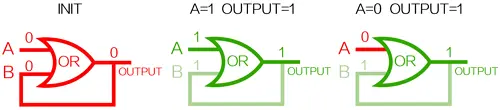
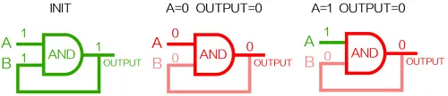
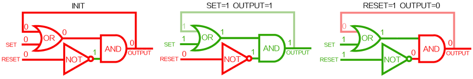

第7讲-内部存储器
存储器（Memory）
- 定义：存储器（Memory）由一定数量的单元构成，每个单元可以被唯一标识，每个单元都
有存储一个数值的能力- 地址：单元的唯一标识符（采用二进制）
- 地址空间：可唯一标识的单元总数
- 寻址能力：存储在每个单元中的信息的位数，即内存中能被单独识别并独立存放一个数据的最小内存空间
— 大多数存储器是字节（8bit）寻址的，32位计算机的最大寻址空间为4GB
- 层次结构
- 主板内存储器：寄存器，Cache，主存。
- 主板外存储器：磁盘，CD-ROM，CD-RW，DVD-RW，DVD-RAM。
- 离线存储器：磁带

AND-OR锁存器
参考文章：谁能告诉我AND-OR锁存器原理？ - 知乎 (zhihu.com)
先解释OR锁OR锁：

OR门B输入和输出连接。
INIT为初始状态A=B=0；
当A=1，B=0时，OUTPUT变为1同时将B变为1；
此时，当A变回0，OUTPUT仍为1（被锁住）。
AND锁：

AND门B输入和输出连接。
INIT为初始状态A=B=1；
当A=0，B=1时，OUTPUT变为0同时将B变为0；
此时，当A变回1，OUTPUT仍为0（被锁住）。
AND-OR锁存器：

锁存器有两个输入SET和RESET，其电路如上图连接。
INIT为初始状态SET=RESET=0，最终输出OUTPUT=0；
当SET=1，RESET=0（SET激活、RESET未激活）时，将输出变为1，锁住（可看出SET变为0，结果不变）
此时RESET激活（SET=1，RESET=1），将输出重新变为0，即为重置。
半导体存储器
- 用半导体芯片作主存储器是目前的主流做法
位元（memory cell）
- 半导体存储器的基本元件，用于存储1位数据
- 特性
- 呈现两种稳态（或半稳态）：分别表示二进制的0和1
- 它们能够至少被写入（write）数据一次：用来设置状态
- 它们能够被读取（read）来获得状态信息
- 操作

半导体存储器类型
| 存储器类型 | 种类 | 可擦除性 | 写机制 | 易失性 |
|---|---|---|---|---|
| 随机存取存储器（RAM） | 读写存储器 | 电可擦除，字节级 | 电 | 易失 |
| 只读存储器（ROM） | 只读存储器 | 不可擦除 | 掩膜 | 非易失 |
| 可编程ROM（PROM） | 只读存储器 | 不可能 | 电 | 非易失 |
| 可擦除ROM（EPROM） | 主要进行读的存储器 | 紫外线可擦除，芯片级 | 电 | 非易失 |
| 电可擦除PROM（EEPROM） | 主要进行读的存储器 | 电可擦除，字节级 | 电 | 非易失 |
| 快闪存储器 | 主要进行读的存储器 | 电可擦除，块级 | 电 | 非易失 |
随机存取存储器（RAM）
- Random-Access Memory（RAM）
- 随机访问：对存储器中任意数据的访问所花费的时间与数据所在位置无关
- 特性
- 可以简单快速地进行读/写操作
- 易失的（Volatile）
- 类型
- 静态RAM（SRAM）：Static RAM（1963年由Robert Norman在仙童发明）
- 动态RAM（DRAM）：Dynamic RAM（1967年由Robert Dennard在IBM发明）
- 静态RAM（SRAM）
- 用传统的触发器逻辑门结构来存储二进制。只要有电源供电，SRAM就会保存数据（断电信息丢失）。常用于Cache。
- 典型结构：六管静态MOS管存储元件
- 状态
- 1状态：C1点为高电平，C2点为低电平，此时T2、T3导通，T1、T4截止。
- 0状态：C1点为低电平，C2点为高电平，此时T2、T3截止，T1、T4导通。
- 信息保持：字选择线（地址线）加低电平，T5、T6截止，触发器与外界隔离，信息保持不变。
- 读出：首先在两根位线上加高电平，地址线加高电平，T5、T6导通。若为状态1，T2导通，所以有电流从位线$\overline{\text{B}}$经过T6、T2流入地，位线$\overline{\text{B}}$上产生负脉冲。反之，若为状态0，位线B上产生负脉冲。
- 写入：地址线加高电平，T5、T6导通。若写入1，位线$\overline{\text{B}}$加低电平，T3导通，T1截止，C1电位升高，完成写1.若写入，位线B加低电平，T4导通，T2截止，C2电位升高，完成写0.
- 即使元件不读写时，保持状态1时，T2、T3导通，仍有电流经T3、T2流向地线，因此功耗大。

- 状态
- 动态RAM（DRAM）
- DRAM的存储单元把数据存储为电容上的电荷。电容上的电荷存在或不存在被解释为状态1或0。
- 写入：字选择线加高电平，T导通。若写1，位线加高电平，给电容充电；若写0，位线加低电平，给电容放点。
- 读出：字选择线加高电平，T导通。若原存1，电容放点，位线产生电流；若原存0，则无电流流过。放电后，电容点位下降，需要重写，成为“再生”操作。由于电容放点产生的电流不会很大，需要放大器增大电流。
- 电容存在漏电效应，一段时间后电荷会流失，导致数据丢失。因此需要定时刷新。

- SRAM与DRAM的对比
| | SRAM | DRAM |
| :—————: | :—————: | :—-: |
| 易失性 | 易失 | 易失 |
| 存储单元 | 双稳态触发器 | 电容 |
| 集成度 | 低 | 高 |
| 功耗 | 高 | 低 |
| 速度 | 快 | 慢 |
| 刷新 | 无 | 有 |
| 价格 | $1/MB | $1/GB |
只读存储器（ROM）
- 只读存储器（ROM）
- Read-only memory（ROM），一种可以长期保存信息的存储器，具有断电后信息仍可继续保存的特点，在正常工作时只可读取数据，而不能写入数据。
- 特性
- 非易失性：不要求供电来维持数据
- 可读，但不能写入新数据
- 应用：微程序设计，常用函数的库子例程，系统程序，函数表
- 问题：
- 数据插入步骤包含了相对较大的固定成本，不论制造的是特定ROM的一个还是几千个副本。
- 无出错处理机会：如果有一位出错，整批的ROM芯片只能报废。
- 用户无法写入数据：唯一的数据写入机会再出厂时完成。
- 可编程ROM（PROM）
- Read-Mostly Memory
- 特性
- 非易失的
- 写操作与读操作相比，较为困难
- 应用：读操作比写操作频繁地多且又需要非易失性存储器的场景
- 类型：EPROM、EEPROM、闪存
- 光可擦除可编程只读存储器（EPROM）
- Erasable programmable read-only memory（EPROM）
- 特性
- 电写入（1- >0）：漏极和选择栅加高压，电子温度上升变为热电子，上升穿过氧化层，进入浮栅。P型半导体的负电子被浮栅中的电子排斥，原理绝缘层，效应管不导通，数据被写入0。
- 光擦除（0->1)：将封装芯片暴露在紫外线下，照射使电子获得能量，逃出浮栅，场效应管导通，所有单元变回状态1。每次擦除需要约20分钟。

- 电可擦除可编程只读存储器（EEPROM）
- Electrically erasable programmable read-only memory（EEPROM）。目前用于车载摄像头和传感器出厂设置、安全气囊的弹出记录以及需要长时间通电的工业自动化设备和服务器的数据记录系统等；在DDR SDRAM中也会使用EEPROM，用于保存内存的相关信息，计算机会在开机自检时会读取这些信息
- 特性
- 可以随时写入而不删除之前的内容；只更新寻址到的一个或多个字节。
- 电写入（1->0）：源极和漏极接地，控制栅接高电平，电子进入浮栅。写操作每字节需要大约5ms，而读一个字节大约0.5微秒。
- 电擦除（0->1）：源极和控制栅接地，漏极接高电平，浮栅中电子进入衬底。每次擦除仅需4~6ms，可擦除百万次。

- 快闪存储器（Flash Memory）
- 特性
- 电可擦除：与EEPROM原理类似，优于EPROM。
- 可以在块级擦除，不能在字节级擦除：优于EPROM，不如EEPROM。
- 需要先擦除再写入。
- 分类
- NOR Flash：数据线和地址线分开，可以读任意字节。
- NAND Flash：数据线可地址线共用，只能按页读取。

- 特性
- 各类ROM 对比


从位元到主存
寻址单元
- 寻址单元（Addressable unit）：由若干相同地址的位元组成。
- 寻址模式：字节（Byte）：常用；字（Word）：专门用途的计算机。
芯片
芯片引脚
- Address：A0 - A19
- Data：D0 - D7
- Vcc：电源
- Vss：地线
- CE：芯片允许引脚
- Vpp：程序电压
- WE：写允许
- OE：读允许
- RAS：行地址选通
- CAS：列地址选通

存储阵列（Memory Array）：由大量寻址单元组成

- 如何寻址
- 获得总线控制权。
- CPU向存储阵列发送地址。
- 时序和控制单元将地址分解为行地址或列地址。
- 向行地址缓冲器发出行地址。
- 行译码器选中行。
- 数据进入行放大器。
- 向列地址缓冲区发出列地址。
- 列译码器选出对应列。
- 数据进入数据输入缓冲区。
- 如何刷新
- 异步DRAM与同步DRAM
- 异步DRAM：传统DRAM是异步的。读写操作时，处理器向内存提供地址和控制电平。接着进入访问延迟时间，这段时间内DRAM执行各种内部功能，如激活行和列地址线的高电容，读取数据，以及通过输出缓冲将数据输出，处理器只能等待这段延迟，即存取时间，从而降低了系统性能。
- 同步DRAM：SDRAM在系统时钟控制下移入和移出数据。处理器或其他主机发出指令和地址信息，并有SDRAM锁存。然后SDRAM在一定的时钟周期后响应。同时，当SDRAM处理请求时，主设备可以安全地执行其他任务。
- DRAM读写周期
- 读周期
（1）行地址必须在$\overline{\text{RAS}}$信号有效之前送到芯片的地址输入端。
（2）$\overline{\text{CAS}}$信号应滞后$\overline{\text{RAS}}$一段时间,并滞后列地址送到芯片地址输入端的时间。
（3）$\overline{\text{RAS}}$、$\overline{\text{CAS}}$的时延分别为 tRAS和 CAS，它们应有足够的宽度。
（4）$\overline{\text{WE}}$信号为高电平，并在$\overline{\text{CAS}}$有效之前建立。
（5）每次读后要再生，即重新写人一次。- 写周期：在写周期中,$\overline{\text{RAS}}$与$\overline{\text{CAS}}$之间的关系以及与地址信息间的关系和读周期相同但还有两点不同。
（1）$\overline{\text{WE}}$信号为低电平，并在$\overline{\text{CAS}}$信号有效之前建立。（$\overline{\text{WE}}$上有一条上划线，表示取反，$\overline{\text{WE}}$=0时，表示写使能有效）
（2）写数据必须在$\overline{\text{CAS}}$有效之前出现在D端。
- 写周期：在写周期中,$\overline{\text{RAS}}$与$\overline{\text{CAS}}$之间的关系以及与地址信息间的关系和读周期相同但还有两点不同。
- 读周期
- SDRAM读写
SDRAM的每一步操作都在外部系统时钟CLK 的控制下进行支持突发(burst)传输方式。只要在第一次存取时给出首地址，以后按地址顺序读写即可，而不再需要地址建立时间和行列预充电时间就能快速连续地从行缓冲器(row buffer)中输出一连串数据。行缓冲器用来缓存指定行中每一行的数据，通常用SRAM 元件实现。内部的工作方式寄存器(也称模式寄存器)可用来设置传送数据的长度以及从收到读命令(与CAS 信号同时发出)到开始传送数据的延迟时间等前者称为突发长度(burst length，BL)，后者称为CAS潜伏期(CAS latency，CL)。根据所设定的 BL和CL，CPU 可以确定何时开始从总线上取数以及连续取多少个数据在开始的第一个数据读出后，同一行的所有数据都被送到行缓冲器中，因此，以后每个时钟可从SDRAM读取一个数据，并在下一个时钟内通过总线传送到 CPU。
- DDR SDRAM
- Double Data Rate：每个时钟周期发送两次数据，一次在时钟脉冲的上升沿，一次在下降沿。
- 通过三种途径获得更高的数据速率，DDR -> DDR2 -> DDR3 -> DDR4 -> DDR5
- 数据传输被同步到时钟的上升沿和下降沿，而不仅仅在上升沿，使得数据速率加倍。
- 使用更高的总线时钟频率。
- 使用缓冲方案。


模块组织
- 位扩展：地址线不变，数据线增加
- 使用8 块4K*1 bit 的芯片组成4K*8 bit的存储器
- 字扩展：地址线增加，数据线不变
- 使用4 个16K*8 bit 的芯片组成64K*8bit 的存储器
- 字、位同时扩展：地址线增加，数据线增加
- 使用8 个16K*4 bit 的芯片组成64K*8bit 的存储器

- 使用8 个16K*4 bit 的芯片组成64K*8bit 的存储器
本博客所有文章除特别声明外，均采用 CC BY-NC-SA 4.0 许可协议。转载请注明来自 Sprooc！
评论